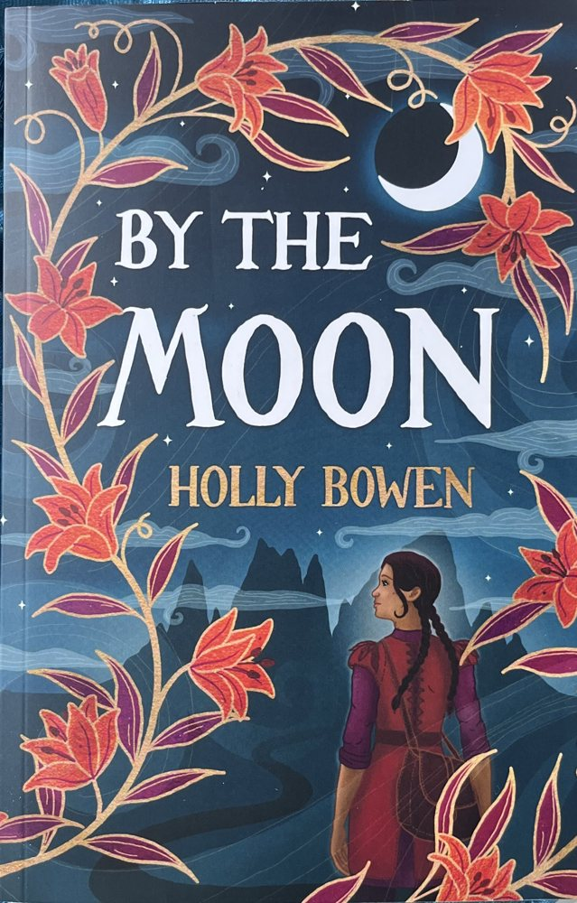

Book two
Feyla is nearly seventeen. She survived the road to Anguard, and now she has friends at the Academy. But the city is cursed, and nothing there will grow.
“The magic she hated most was needed here.”
“Absolutely amazing!! If you think book two can't be as good as book one then you're in for a treat.”
“I didn't want it to end”
Early readers, quoted on hollybowen.com

By the Moon
Book one, out since 22 April 2025. Feyla's story starts here.
“Super engaging and intriguing magical quest!” Pinky3f, Amazon
Both books, signed
NZ$62
By the Moon and Between Wind and Stone, signed by Holly and posted free anywhere in New Zealand. In Taupō you'll also find them at Paper Plus.
Get the signed setHolly
Holly writes in Taupō. She teaches yoga, works part-time in marketing at Taupō Tandem Skydive and is raising two boys. The best thing readers tell her is that her books feel like the fantasy you grew up on.
“I always wanted to be a writer. I was one of those kids with my head in a book all the time.”Holly, to Taupō News
Book three is coming
Feyla's story ends in the third book, which Holly is writing now. Find her on Instagram at @hollybowenauthor.